The docs, dark and quiet
Lesson 9, 2026-11-05. The docs layer back to dark (designer: no light docs page), keeping everything else of the quiet rework: one specimen per component with its legend under it, text-only rules with links instead of embedded components, neutral headings, class names as plain gray monospace, the fixed scroll highlight, the dividers and the spacing. Dark: the artifact pages' near-black with gray text; each specimen on the product's own page ground, a step lighter, with no border; one accent, the current nav item's thin line; the rules' thin green and coral bars and nothing else in color. Before is the light layer (live for a few hours, acf1738); after is dark. Every shot: 1280 × 1500 and 390 × 1700. The earlier step: the docs made quiet. Live: design-system/docs/.
Not a look change to the product: every stage on the family pages computes as the same stage on specimens.html, widths and heights included, both themes, at 1280 and 390 (scripts/check_docs_stages.mjs).
Buttons and links · Sort button · buttons-and-links.html#sort-button
Sort button, your example from the quiet rework: one specimen, the legend under it, the two text-only rules, the disabled variant cropped to the button.
1280

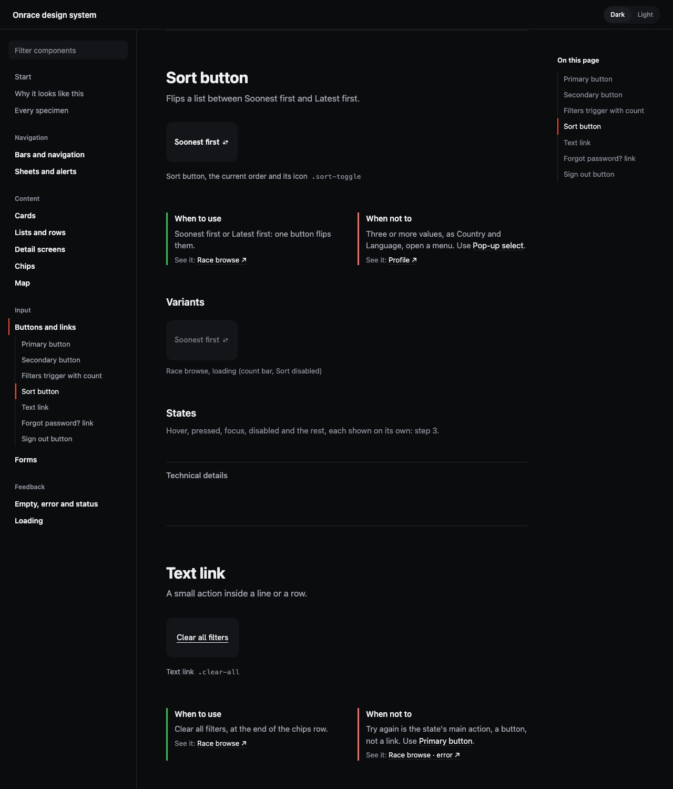
390
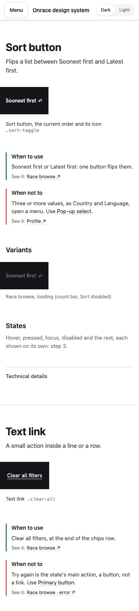
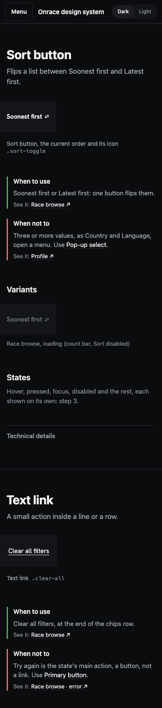
Forms · the top of the page · forms.html
The page as a whole: near-black, gray text, the accent only on the current item in the nav and in "On this page".
1280
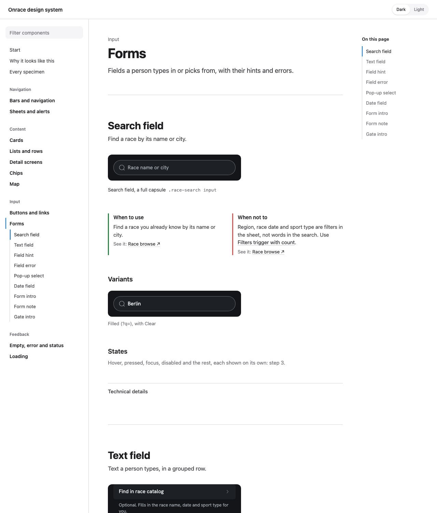
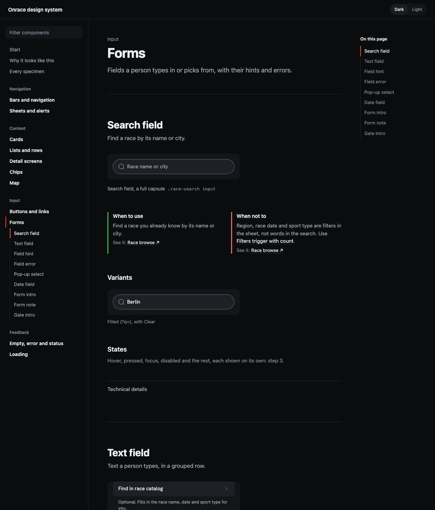
390
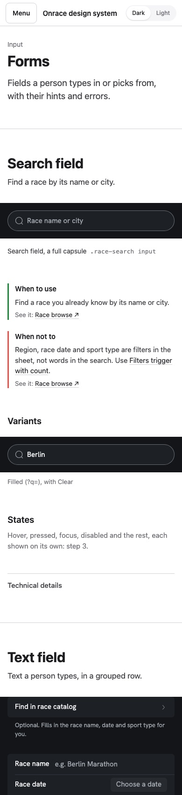
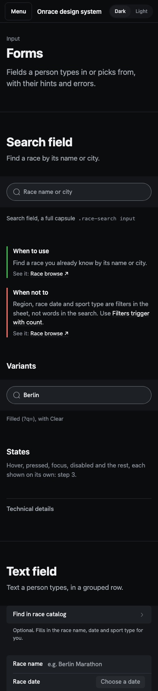
Sheets and alerts · Confirm alert · sheets-and-alerts.html#confirm-alert
The alert on its own, cropped from its 600px stage, on the product's page ground with no frame.
1280
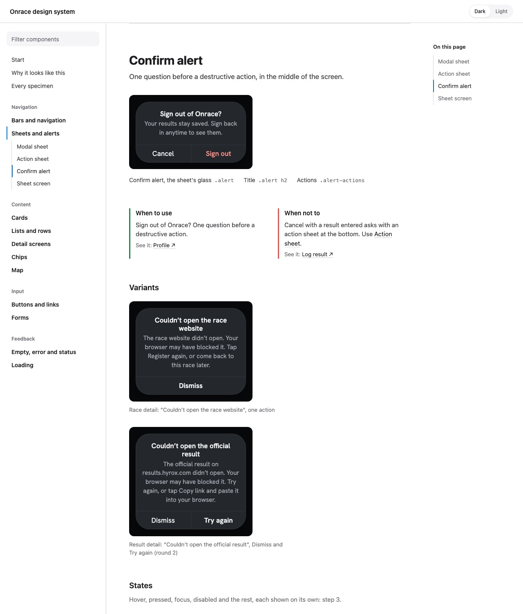
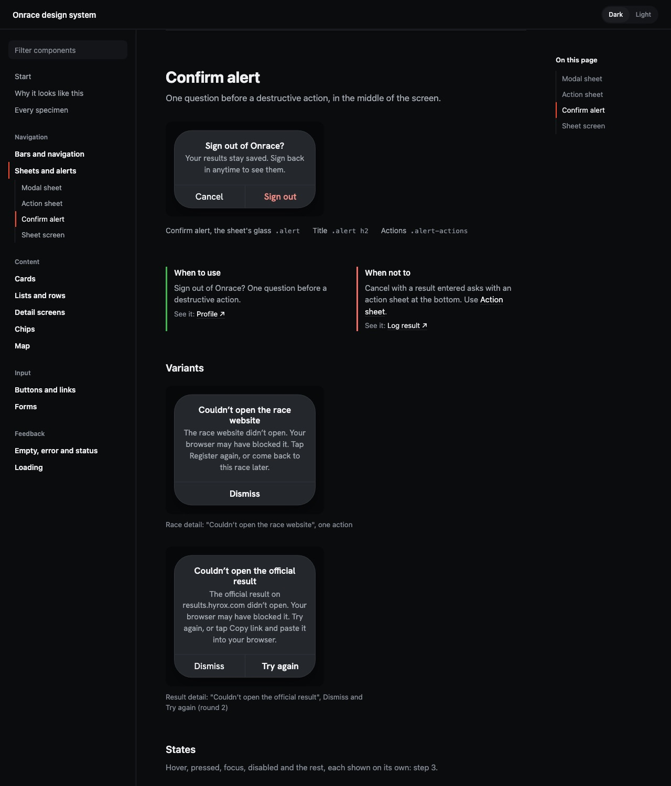
390
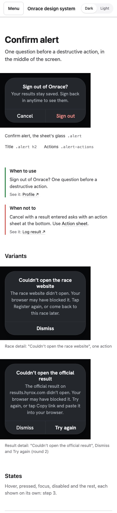
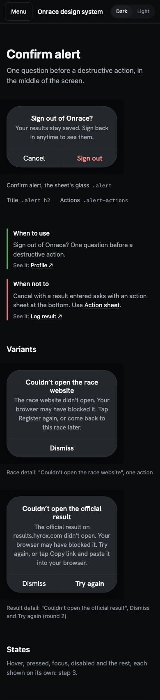